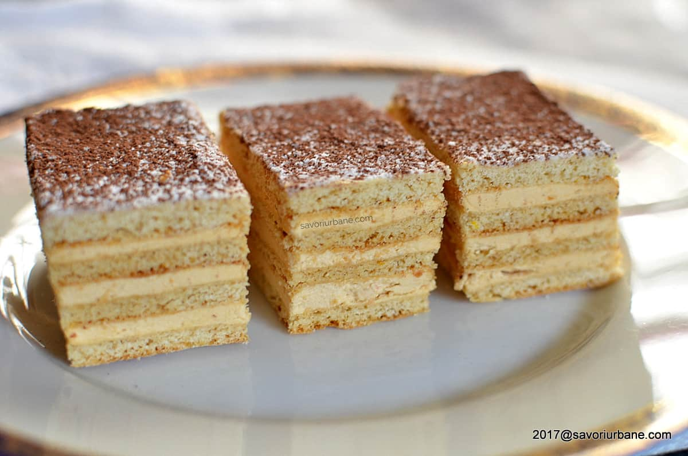
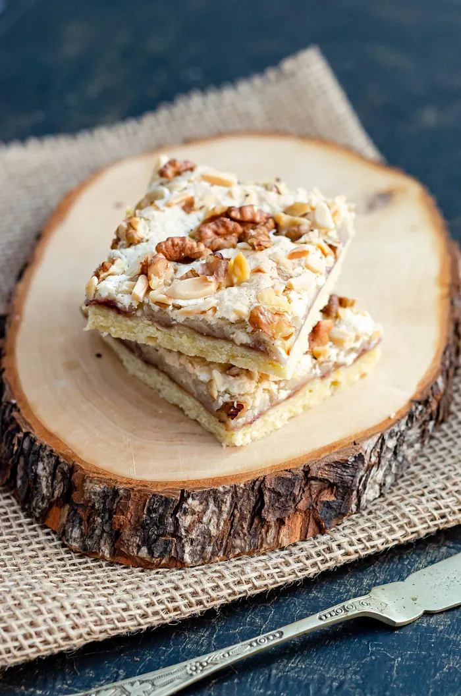

The word cookie refers to "small cakes" derived from the Dutch word "koekje" or "koekie." Cookies contain many of the same ingredients as cakes except that they have a lower proportion of liquid with a higher proportion of sugar and fat to flour. Cookie recipes can be prepared in myriad shapes, flavors and textures, and can be decorated. Every country seems to have its favorite: in North America it's the chocolate chip; in the United Kingdom it's shortbread; in France, it's sables and macarons; and it's biscotti in Italy.
 